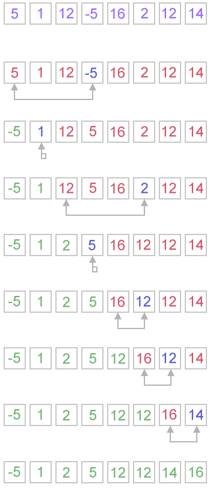
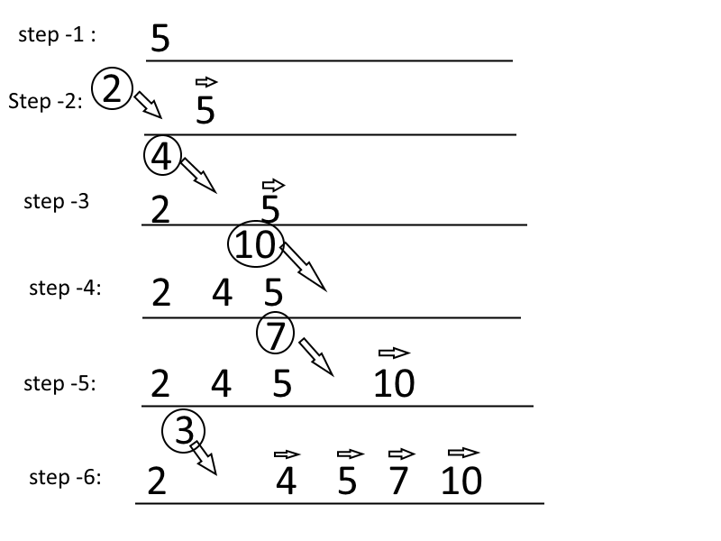

Sorting Algorithm
- Bubble Sort - explanation with tested code
- Selection Sort - explanation with tested code
- Insertion Sort - explanation with tested code
- Merger Sort - explanation with tested code
- Quick Sort - explanation with tested code
- Heap Sort - explanation with tested code
- Bucket Sort
- Shell Sort
- PigenHole Sort
- BinaryTree Sort
- Radix Sort
- Cocktail Sort
- Other Sort
Bubble Sort
How it works:
step-1: you compare the first item with the second. If the first item is bigger than the second item. you swap them so that the bigger one stays in the second position.
step-2:And then compare second with third item. if second item is bigger than the third, we swap them. otherwise, they stayed in their position. Hence, the biggest among first three is in the third position.
step-3:we keep doing it. until we hit the last element of the array. In that way we bubble up the biggest item of the array to the right most position of the array.
step-4: Look at the inner loop in the code below.
step-5: We repeat this process, starting from the last item of the array. look at the outer loop in the code below. We do this way, so that after finishing the first inner loop, the biggest one will be in the last item of the array.
step-6: and then we move backward inside the outer loop.
same thing is going on....
function bubbleSort(arr){
var len = arr.length;
for (var i = len-1; i>=0; i--){
for(var j = 1; j<=i; j++){
if(arr[j-1]>arr[j]){
var temp = arr[j-1];
arr[j-1] = arr[j];
arr[j] = temp;
}
}
}
return arr;
}
bubbleSort([7,5,2,4,3,9]); //[2, 3, 4, 5, 7, 9]
bubbleSort([9,7,5,4,3,1]); //[1, 3, 4, 5, 7, 9]
bubbleSort([1,2,3,4,5,6]); //[1, 2, 3, 4, 5, 6]
complexity:
Selection Sort
how does it works: This is very simple. Go through the array, find the index of the lowest element swap the lowest element with the first element. Hence first element is the lowest element in the array.
Now go through the rest of the array (excluding the first element) and find the index of the lowest and swap it with the second element.
thats how it continues to select (find out) the lowest element of the array and putting it on the left until it hits the last element.

function selectionSort(arr){
var minIdx, temp,
len = arr.length;
for(var i = 0; i < len; i++){
minIdx = i;
for(var j = i+1; j<len; j++){
if(arr[j]<arr[minIdx]){
minIdx = j;
}
}
temp = arr[i];
arr[i] = arr[minIdx];
arr[minIdx] = temp;
}
return arr;
}
complexity:
Insertion sort
How it works: Imagine you are playing cards. Somebody is giving you cards one by one. When you are receiving card, you are planning to put them in a way so that the smaller one is on the left. This means you want to insert them in a sorted way
step-1: If the first card you are getting is 5. Just hold the card in your hand. you dont have to do anything.
step-2: If the second card is 2, you want to put it before 5 so that the two cards you have are sorted. When you are putting the card with number 2 at the left, you are changing the position of the card 5 from first position to second position. And then first position becomes available and you put 2 there.
step-3: If the third card is 4. you will start from second position. In the second position, you have card 5 which is bigger than 4. Hence you will move 5 to the third position. The next card to the left is 2 which is smaller than 4. Hence, you wont move 2. And you will insert card 4 in the second position.
step-4: Then you got 10. It is bigger than the previous card which is 5. Hence, you just add it at the last position.
step-5: The next card is 7. You just move the position of the card 10 to the right and insert card 7.
step-6: If the last card is 3. You will have to move 10 to the right as it is bigger than 3. and then you check with the next card to the left it is 7 which is bigger than 3. you move it to the right. similarly, you move 5, 4 to the right. And put the number 3 before 2 as 2 is smaller than 3.
congrats. you are done.
Code Insertion sort: Code is similar to the card and image above. It starts with the second element. Pick the second element to be inserted and then compare to the previous element. If the first one is bigger, move the first one to second position and second one at first.
Now first and second item is sorted.
Then, pick the third element and check whether the second element is bigger than the third. keep going similar way until you hit the first element or a element smaller than the element you are comparing with. When you get an item smaller than the picked item, you insert it.
super easy.
function insertionSort(arr){
var i, len = arr.length, el, j;
for(i = 1; i<len; i++){
el = arr[i];
j = i;
while(j>0 && arr[j-1]>toInsert){
arr[j] = arr[j-1];
j--;
}
arr[j] = el;
}
return arr;
}
complexity: the worst case O(n2) and best case O(n)
Merge Sort
its a divide and conquer type algorithm.
just break down your array into small and small pieces and until you have one items in each pieces. then merge together by comparing them. If you still have hard time to figure out what i am talking about, look at merge sort gif taken from wikipedia

Code Merge Sort: Merge sort has two parts. Main part does divide or breaks down and second part is merging/combining parts. At the time of combining, parts are combined together.
Divide: the first function named as mergeSort is actually a divide function. where an array is divided into two.
merge: this is just merging two sorted array. Just be careful this two array could be in different size
function mergeSort(arr){
var len = arr.length;
if(len <2)
return arr;
var mid = Math.floor(len/2),
left = arr.slice(0,mid),
right =arr.slice(mid);
//send left and right to the mergeSort to broke it down into pieces
//then merge those
return merge(mergeSort(left),mergeSort(right));
}
function merge(left, right){
var result = [],
lLen = left.length,
rLen = right.length,
l = 0,
r = 0;
while(l < lLen && r < rLen){
if(left[l] < right[r]){
result.push(left[l++]);
}
else{
result.push(right[r++]);
}
}
//remaining part needs to be addred to the result
return result.concat(left.slice(l)).concat(right.slice(r));
}
ref: merge sort
Quick sort
how does it works:
Step-1: You have to pick a pivot. This could be randomly selected or the middle one. Here we select the last element of the array.
Step-2: Put all the items smaller than the pivot value to the left and larger than the pivot value to the right.
Step-3:Repeat the step-2 for both left and right side of the pivot (pick a pivot, put all item smaller than the pivot to the left and larger on the right)
Explain the code
Call Quick sort: Pass the array and pass left and right to the quickSort function. For the first call, left would be the index of the first element which is 0 and right would be the index of the last element which would be length -1.
Select Pivot: We select pivot as the last index of the array.
Call Partition function: After calculating the pivot, we send the pivot to the partition function. In the partition function we pass array, pivot index, left and right.
partitionIndex: In the partition function, we keep move all the items smaller than the pivot value to the left and larger than pivot value to the right. We have to keep track of the position of the partition. so that we can split the array into two parts in the next step. This tracking of the index where we partition the array is done by using partitionIndex variable. the initial value is left.
Swap function: This is just a helper function to swap values of the array.
move elements: we start a for loop from the left, and if the values is smaller than the pivot values we swap it with the position of the partitionIndex and increase the value of the partitionIndex. If the value is bigger, we don't do anything. We keep going until the element before the last element (remember last element is the pivot)
place pivot After moving all the smallest element to the left, we swap the last element (pivot value) with the partitionIndex. By doing this, the pivot sits where it suppose to sit when the full array is sorted. As all elements left to it smaller and all element right to it is bigger. End of the function partition, return the partitionIndex
Repeat the process: Now come back to quickSort function. when you get the partitionIndex, apply quickSort for the left side of the array and right side of the array. keep doing it until left is smaller than right.
function quickSort(arr, left, right){
var len = arr.length,
pivot,
partitionIndex;
if(left < right){
pivot = right;
partitionIndex = partition(arr, pivot, left, right);
//sort left and right
quickSort(arr, left, partitionIndex - 1);
quickSort(arr, partitionIndex + 1, right);
}
return arr;
}
function partition(arr, pivot, left, right){
var pivotValue = arr[pivot],
partitionIndex = left;
for(var i = left; i < right; i++){
if(arr[i] < pivotValue){
swap(arr, i, partitionIndex);
partitionIndex++;
}
}
swap(arr, right, partitionIndex);
return partitionIndex;
}
function swap(arr, i, j){
var temp = arr[i];
arr[i] = arr[j];
arr[j] = temp;
}
quickSort([11,8,14,3,6,2,7],0,6);
//[2, 3, 6, 7, 8, 11, 14]
quickSort([11,8,14,3,6,2,1, 7],0,7);
//[1, 2, 3, 6, 7, 8, 11, 14]
quickSort([16,11,9,7,6,5,3, 2],0,7);
//[2, 3, 5, 6, 7, 9, 11, 16]
ref: quick sort
time complexity: talk about time complexity of quick sort
Heap sort
how does it works: first step is to build an heap. That is done in the heapify function. Hepaify put the largest element at the root.
Add explanation for shiftDown
Add graphical description
Try to understand from here. It doesn't have any code.
function heapSort(arr){
var len = arr.length,
end = len-1;
heapify(arr, len);
while(end > 0){
swap(arr, end--, 0);
siftDown(arr, 0, end);
}
return arr;
}
function heapify(arr, len){
// break the array into root + two sides, to create tree (heap)
var mid = Math.floor((len-2)/2);
while(mid >= 0){
siftDown(arr, mid--, len-1);
}
}
function siftDown(arr, start, end){
var root = start,
child = root*2 + 1,
toSwap = root;
while(child <= end){
if(arr[toSwap] < arr[child]){
swap(arr, toSwap, child);
}
if(child+1 <= end && arr[toSwap] < arr[child+1]){
swap(arr, toSwap, child+1)
}
if(toSwap != root){
swap(arr, root, toSwap);
root = toSwap;
}
else{
return;
}
toSwap = root;
child = root*2+1
}
}
function swap(arr, i, j){
var temp = arr[i];
arr[i] = arr[j];
arr[j] = temp;
}
Question: Between merge and heap sort, which one you will choose?
compare with other:compare heap sort with others
Bucket Sort
bucket sort or bin sort. you partition the whole array into small buckets. put numbers in the related bucket and then sort each bucket by another algorithm or using bucket sort.
for example, you have an array where numbers between 1 to 100 is for a million times.
If you want to sort it by any of the method we talked before, will be time consuming.
Bucket sort would be convenient here
Shell Sort
how does it works: it takes a gap. for example gap of five. in that case it will take all the elements at 1, 6, 11, 16... and will sort them among themselves. Hence this gapped array will be sorted. secondly it will take 2, 7, 12, 17th positioned element and will sort among themselves
second time. it will take all in three positioned. like 1, 4, 7, 10, 13, 16, 19 and will sort among themselves. after this all these will be sorted. and then goes to 2, 5, 8, 11, 14, 17, 20
Then it will do 1 gap sorting...
shell sort is rarely used in application as it performs more operations and have higher cache miss ratio than quick sort.
ref: wiki: shell sort
Pigeonhole Sort
also known as count sort (not counting sort). you have an array. and each element has a key value pair. you iterate over the original array and put each element based on the key to its small array (pigeon hole). and then iterate over the pigeonhole array in order.
Counting sort: counting sort works same way, but it returns number of elements for each key other than the original elements. very thoughtful name, indeed.
ref: wiki pigeonhole sort
Binary Tree sort
Radix Sort
its a non comparative integer sorting algorithm. it compares the integer based on the position of the number (significance).
there are two radix sort. LSD (least significant digit) radix sort and MSD (most significant digit) radix sort
cocktail sort
also known as bidirectional bubble sort, cocktail shaker sort, shaker sort, ripple sort, shuffle sort, shuttle sort.
difference with bubble sort is that this sort in both direction each pass. Its difficult to implement.
Other sorting algorithms
patience sorting: sorting based on solitaire card game. you draw card either put in a new pile or existing pile. when you are putting card on a pile, a higher value card will go on top
comb sort: it is an improvement on bubble sort. the inner loop of bubble sort is modified so that gap between swapped elements goes down for each iteration of the outer loop by using a shrink factor. wiki comb sort the usual shrink factor is 1.3 and the gap (>=1) is calculated by Math.floor(lenght/1.3)
Spaghetti sort: it takes linear time but need parallel processor to sort. read it to understand
Intro sort:combines both quick sort and heap sort. so that worst and average becomes O(nlongn). it starts with quick sort and switch to heap sort if recursion depth increases based on the number of elements to be sorted.
Timsort: this is a hybrid of merge and insertion sort. try to find subset of data that is already sorted. and use that data to sort rest efficiently. and then merged by merge sort. this algorithm is primarily used in python. This actually invented by Tim peters to use in python.
Block sort: runs at least two merge operation with one insertion sort. wiki: block sort
library sort: it is an insertion sort with gaps in the array to improve insertion. wiki: library sort
Tournament sort: Its a selection sort with a priority queue to find the next element to sort. wiki: tournament sort
others: Gnome sort, unshuffle sort, Strand sort, smooth sort
Need more:
JavaScript part -1: JS basic algorithm
HTML: html related questions
Full list of interview questions are https://github.com/khan4019/front-end-Interview-Questions
A lot of data structure, tree, graphs related interview questions are on the pipe line. Stay tuned